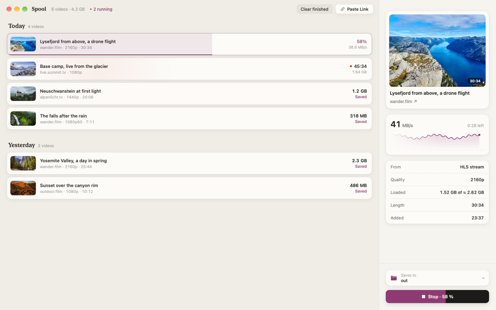

Every video.
Saved.
Play a video in Safari, click Spool in the toolbar, and keep it on your Mac as a file: streams, live broadcasts and plain files, in the best quality there is.
Coming to the Mac App Store
One purchase. No subscription, no account.

One click in Safari
Spool finds the video on the page, in every quality it comes in, and says how big each will be.
Streams of every kind
HLS, DASH and plain files, fetched several pieces at a time and joined without re-encoding.
Live, as it happens
A broadcast is recorded from when you start until you stop, and kept in one file.
Copy protection respected
DRM protected video is shown as protected and left alone. Spool never decrypts anything.